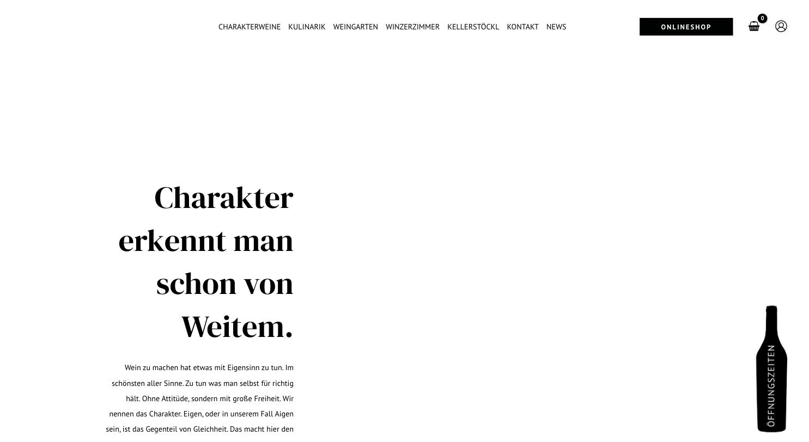
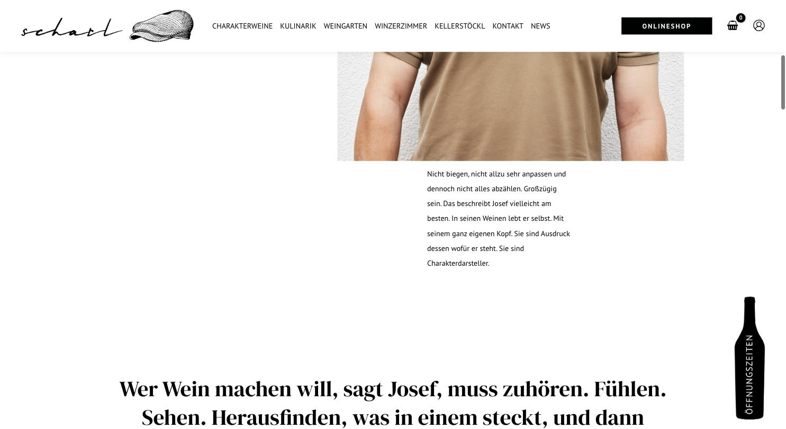

Reines Schwarzweiß, Magazinlogik – überraschend stark.
Kein einziger Farbton außer Schwarz und Weiß. DM Serif Display trägt die gesamte Erzählung, PT Sans hält den Rest neutral. Der Aufbau folgt einem Magazin: schmale zentrierte Textspalte, große Serif-Zitate über die volle Breite, versetztes Bildraster mit Hochformaten. Die gezeichnete Schiebermütze als Bildmarke gibt der Marke ein Gesicht, ohne folkloristisch zu werden. Der senkrechte „Öffnungszeiten“-Reiter in Flaschenform am rechten Rand ist eine eigenständige, charmante Lösung.
#000101Schwarz#ffffffWeiß#fafafaGrauweiß#5f5f5fSekundärtextDM Serif Display (Headlines) + PT Sans (Body/Nav)
| Rolle | Spezifikation & Beispiel |
|---|---|
| H1 | DM Serif Display 58/81 px · w400 · schwarz Charakter erkennt man schon von Weitem. |
| H2 | DM Serif Display 42/55 px · w400 Zitatzeile über volle Breite |
| H3 | DM Serif Display 32/42 px · w400 Zwischentitel |
| Body | PT Sans 14/29 px · w400 Fließtext, sehr großzügige Zeilenhöhe |
| Nav | PT Sans 14 px · w500 · UPPERCASE CHARAKTERWEINE / KULINARIK |
Container 1200 px, Seitenlänge 6.306 px. Zentrierte schmale Textspalte im Hero, danach versetztes Bildraster, dazwischen ganzseitige Serif-Zitate.
11 Bilder, 16:9 und 3:4 gemischt. Reportagefotografie: Person vor Wand, Hände mit Trauben, Architektur in der Landschaft. Sehr einheitliche, helle Bildstimmung.
Schwarzer „ONLINESHOP“-Button im Header, Warenkorb- und Konto-Icon daneben. Senkrechter Öffnungszeiten-Reiter in Flaschenform am rechten Bildrand.
Sparsam, Einblendungen beim Scrollen.

